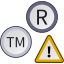

File:Cc-nc white.svg
From Wikimedia Commons, the free media repository
{kind=link}
Size of this PNG preview of this SVG file: 64 × 64 pixels. Other resolutions: 240 × 240 pixels | 480 × 480 pixels | 600 × 600 pixels | 768 × 768 pixels | 1,024 × 1,024 pixels.
{kind=link}
{kind=link}
{kind=link}
{kind=link}
{kind=link}
{kind=link}
Original file (SVG file, nominally 64 × 64 pixels, file size: 2 KB)
Summary[edit]
{kind=link}
| Description |
English: White cc-nc, a Creative Commons Noncommercial icon: "You let others copy, distribute, display, and perform your work — and derivative works based upon it — but for noncommercial purposes only." [1]
|
||
| Date | circa 2006 | ||
| Source | The original version of this image was downloaded from the Creative Commons website | ||
| Author | Rei-artur e.a. | ||
| Permission (Reusing this file) |
See http://creativecommons.org/policies for trademark restrictions. |
||
| Other versions |
|
||
| SVG development |
|
{kind=link}
{kind=link}
{kind=link}
{kind=link}
{kind=link}
{kind=link}
{kind=link}
{kind=link}
{kind=link}
{kind=link}
Licensing[edit]
{kind=link}
| This file is ineligible for copyright and therefore in the public domain because it consists entirely of information that is common property and contains no original authorship. |
|  |
This work includes material that may be protected as a trademark in some jurisdictions. If you want to use it, you have to ensure that you have the legal right to do so and that you do not infringe any trademark rights. See our general disclaimer. |
File history
Click on a date/time to view the file as it appeared at that time.
| Date/Time | Thumbnail | Dimensions | User | Comment | |
|---|---|---|---|---|---|
| current | 20:24, 22 December 2014 | 64 × 64 (2 KB) | Be..anyone (talk | contribs) | == {{int:filedesc}} == {{Information |description ={{en|White '''cc-nc''', a Creative Commons '''Noncommercial''' icon: "You let others copy, distribute, display, and perform your work — and derivative works based upon it... | |
| 21:13, 11 September 2012 |  | 64 × 64 (2 KB) | Odder (talk | contribs) | optimized version by Palosirkka | |
| 17:59, 22 April 2006 |  | 64 × 64 (5 KB) | Rei-artur (talk | contribs) | {{cc-by-2.0}} White '''cc-nd''', a Creative Commons '''No Derivative Works''' icon: "You let others copy, distribute, display, and perform only verbatim copies of your work, not derivative works based upon it." [http://creativecommo |
- You cannot overwrite this file.
File usage on Commons
More than 100 pages link to this file. The following list shows the first 100 page links to this file only. A full list is available.
{kind=link}
- Creative Commons icons
- User:Aditya Kabir
- User:Pfctdayelise/SpecialUpload redesign
- User:Rei-artur/by-page
- User:Rfl/CC templates/all
- User:Rfl/Logos
- User:Rfl/OtherPictures
- User:Rfl/Pictures
- User:Rfl/cc logo
- User:Timeshifter
- User talk:Afrox
- User talk:Ahnjo
- User talk:Alfredo Molina
- User talk:Americasroof
- User talk:Amzer
- User talk:Arbalete/Archivio
- User talk:Argos'Dad
- User talk:Azeri
- User talk:BD2412
- User talk:Badseed/Archive1
- User talk:Bin2k1
- User talk:Bjmspangler
- User talk:Blueag9
- User talk:Bporter28
- User talk:Briancua
- User talk:Cesco 82
- User talk:Chanakyathegreat~commonswiki
- User talk:Chris93
- User talk:Civvi~commonswiki
- User talk:Clodion
- User talk:Crackxxx~commonswiki
- User talk:Cvbr
- User talk:Damianfossi~commonswiki
- User talk:Doug Coldwell
- User talk:Edward
- User talk:EncMstr
- User talk:Esv
- User talk:Eug
- User talk:FightingRaven531~commonswiki
- User talk:FlickrLickr/Archive1
- User talk:Gaius Cornelius
- User talk:Gareth
- User talk:Generale Lee
- User talk:Gmagno
- User talk:Gotmilk~commonswiki
- User talk:Hhmb
- User talk:Hintha
- User talk:Howard the Duck
- User talk:Ingolll
- User talk:Ischa1
- User talk:JB82
- User talk:Joho345
- User talk:Jordi Roqué
- User talk:Jorge
- User talk:JukoFF
- User talk:Kaiketsu
- User talk:Karsten11
- User talk:Koavf
- User talk:Leoplus
- User talk:M Van Houten~commonswiki
- User talk:Maor X
- User talk:Marcushsu
- User talk:MartinHansV
- User talk:MathKnight
- User talk:Mathgb
- User talk:Maus-78
- User talk:Metamario
- User talk:Michael32710
- User talk:Motacilla
- User talk:Mr. Moonlight
- User talk:Nicolas pato
- User talk:Parigot
- User talk:PrinceGloria
- User talk:Rogerd
- User talk:Romek79
- User talk:Rosarino
- User talk:Roxanna
- User talk:Schumi4ever
- User talk:Sk@te~commonswiki
- User talk:Spedona/Blasons
- User talk:Thivierr
- User talk:Tripy~commonswiki
- User talk:Warko
- User talk:Yvwv
- User talk:Zape82
- User talk:Сидик из ПТУ
- User talk:غمدان زيد~commonswiki
- Commons:Deletion requests/Archive/2005/08
- Commons:Flickr files
- Commons:Marcas de direitos autorais
- File:Antje-filmkorn SW.jpg
- File:Cc-by new.svg
- File:Cc-by new white.svg
- File:Cc-by white.svg
- File:Cc-nc.svg
- File:Cc-nc white.png
- File:Cc-nc white (2).svg (file redirect)
- File:Cc-nd.svg
- File:Cc-nd white.svg
- File:Cc-sa.svg
{kind=link}
{kind=link}
{kind=link}
.svg&redirect=no){kind=link}
File usage on other wikis
The following other wikis use this file:
- Usage on az.wikipedia.org
- Usage on be.wikipedia.org
- Usage on be.wikimedia.org
- Usage on bg.wikipedia.org
- Usage on bg.wikibooks.org
- Usage on bn.wikipedia.org
- Usage on ca.wikipedia.org
- Fitxer:President Companys.jpg
- Fitxer:President Macia.jpg
- Fitxer:President irla.jpg
- Plantilla:Parlament de Catalunya
- Fitxer:Joan Reventós i Carner.jpg
- Plantilla:Generalitat de Catalunya
- Fitxer:DOGC 1(gencat).jpg
- Fitxer:DOGC 2(gencat).jpg
- Fitxer:DOGC 3(gencat).jpg
- Fitxer:DOGC 4(gencat).jpg
- Fitxer:Tripartit Català.jpg
- Fitxer:Montilla Investidura.jpg
- Fitxer:Govern de catalunya des-2006.jpg
- Fitxer:Govern catalunya abril-2006.jpg
- Fitxer:Govern catalunya maig-2006.jpg
- Fitxer:Antoni rovira.jpg
- Fitxer:Manuel serra.jpg
- Fitxer:Joaquim xicoy.jpg
- Fitxer:Joan casanovas.jpg
- Fitxer:Govern maragall 2003.jpg
- Viquiprojecte:Política de doctrina d'exempció/DP-DigitalGlobe
- Viquiprojecte:Política de doctrina d'exempció/Generalitat de Catalunya
- Viquiprojecte:Política de doctrina d'exempció/Diari Parlem
- Viquiprojecte:Política de doctrina d'exempció/Parlament de Catalunya
- Plantilla:Enrique Bofí
- Fitxer:Enrique Bofí. Gandia.jpg
- Fitxer:Enrique Bofí. Ullal.jpg
- Fitxer:Enrique Bofí. Dunasagua.jpg
- Plantilla:Ramón Castañer
- Fitxer:Ramón Castañer. Jazmina 1954.jpg
- Fitxer:Ramón Castañer. La Mina 1963..jpg
- Fitxer:Ramón Castañer Mural de Sant Joan Bosco.jpg
- Fitxer:Ramón Castañer. Mural de Sant Pancraç, 1955.jpg
- Fitxer:Ramón Castañer. Arrastrà de Pelletes. 1997.jpg
- Fitxer:Pelletes.jpg
- Fitxer:Ramón Castañer. Mural de Sant Jordi. (Alcoi).jpg
- Fitxer:Pepa Botella de Castañer 1957.jpg
- Fitxer:Ramón Castañer. El avión de la abuela.jpg
- Fitxer:Logo fgc.svg
- Fitxer:Balaguer tren-tram.jpg
- Fitxer:Logotip mNACTEC.png
{kind=link}
{kind=link}
{kind=link}
{kind=link}
.jpg){kind=link}
.jpg){kind=link}
.jpg){kind=link}
.jpg){kind=link}
{kind=link}
{kind=link}
{kind=link}
{kind=link}
{kind=link}
{kind=link}
{kind=link}
{kind=link}
{kind=link}
{kind=link}
{kind=link}
{kind=link}
{kind=link}
{kind=link}
{kind=link}
{kind=link}
{kind=link}
{kind=link}
{kind=link}
.jpg){kind=link}
{kind=link}
{kind=link}
{kind=link}
{kind=link}
{kind=link}
View more global usage of this file.
{kind=link}
{kind=link}
{kind=link}
{kind=link}
{kind=link}
{kind=link}
{kind=link}
{kind=link}
{kind=link}
{kind=link}